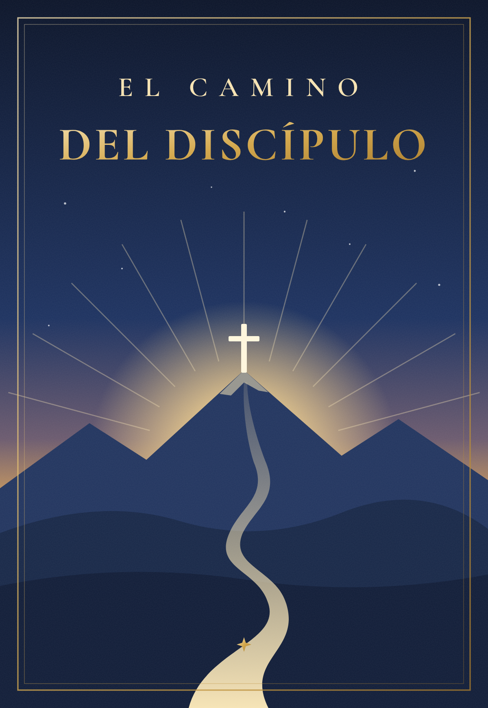

<!doctype html><html lang="es"><head><meta charset="utf-8"><link rel="stylesheet" href="common.css">
<style>
  .card{position:relative;overflow:hidden;color:#f6e3b4;font-family:var(--serif);display:flex;flex-direction:column;align-items:center;justify-content:center;text-align:center;
        background:radial-gradient(ellipse at 50% 30%,#2a3f6e,#14213d 50%,#0b1429 100%)}
  .card::before{content:"";position:absolute;inset:28px;border:2px solid rgba(233,199,122,.55);pointer-events:none}
  .card::after{content:"";position:absolute;inset:38px;border:1px solid rgba(233,199,122,.25);pointer-events:none}
  .label{font:600 26px/1 var(--sans);letter-spacing:.32em;text-transform:uppercase;color:#e9c77a}
  .title{font:700 104px/1 var(--serif);color:#fff}
  .title i{font-weight:600;color:#e9c77a}
  .line{width:260px;height:2px;background:linear-gradient(90deg,transparent,#e9c77a,transparent);margin:34px auto}
  .url{font:500 30px/1 var(--sans);color:#cfc9bb}
  .book{border-radius:4px 14px 14px 4px;box-shadow:0 40px 80px rgba(0,0,0,.6),0 0 0 1px rgba(233,199,122,.4)}
  .verse{font:italic 500 70px/1.25 var(--serif);color:#fff;max-width:860px}
  .ref{font:600 34px/1 var(--serif);color:#e9c77a;margin-top:40px;letter-spacing:.05em}
  .num{width:110px;height:110px;border-radius:50%;display:grid;place-items:center;background:#e9c77a;color:#0b1429;font:700 60px/1 var(--serif);margin-bottom:34px}
  .stars{font-size:84px;letter-spacing:12px;color:#e9c77a;margin:20px 0 10px}
  .glow{position:absolute;width:900px;height:900px;border-radius:50%;background:radial-gradient(circle,rgba(233,199,122,.22),transparent 65%);pointer-events:none}
  .brand{position:absolute;bottom:78px;left:0;right:0;font:600 30px/1 var(--serif);letter-spacing:.2em;color:#e9c77a;opacity:.9}
</style></head><body>
<div id="root"></div>
<script>
var V = {
  fundamentos:['Fundamentos','Cualquiera, pues, que me oye estas palabras, y las hace, le compararé a un hombre prudente, que edificó su casa sobre la roca.','Mateo 7:24',1],
  crecimiento:['Crecimiento','Antes bien, creced en la gracia y el conocimiento de nuestro Señor y Salvador Jesucristo.','2 Pedro 3:18',2],
  madurez:['Madurez','Arraigados y sobreedificados en él, y confirmados en la fe, así como habéis sido enseñados.','Colosenses 2:7',3],
  perseverancia:['Perseverancia','He peleado la buena batalla, he acabado la carrera, he guardado la fe.','2 Timoteo 4:7',4]
};
var k = location.hash.slice(1), r = document.getElementById('root'), h = '';
function size(w,hh){ r.innerHTML = '<div class="card" style="width:'+w+'px;height:'+hh+'px">'+h+'</div>'; }
if (k === 'historia') {
  h = '<div class="glow" style="top:300px"></div><div class="label">Ya disponible en Amazon</div><div class="line"></div>' +
      '' +
      '<div class="title" style="font-size:96px">El Camino<br><i>del Discípulo</i></div><div class="line"></div>' +
      '<div class="url">elcaminodeldiscipulo.vercel.app</div>';
  size(1080,1920);
} else if (k === 'publicacion') {
  h = '<div class="glow" style="left:-200px"></div><div style="display:flex;align-items:center;gap:70px;padding:0 90px">' +
      '' +
      '<div style="text-align:left"><div class="label">¡Ya disponible!</div><div class="title" style="font-size:86px;margin:30px 0">El Camino<br><i>del Discípulo</i></div>' +
      '<div style="font:500 32px/1.45 var(--sans);color:#d6d1c4;max-width:420px">Un libro para crecer en la fe y permanecer fieles a Cristo hasta el final.</div>' +
      '<div class="label" style="margin-top:44px;letter-spacing:.18em">Disponible en Amazon</div></div></div>';
  size(1080,1080);
} else if (k === 'resena') {
  h = '<div class="glow"></div><div class="label">¿Ya lo leíste?</div><div class="line"></div>' +
      '<div class="title" style="font-size:92px">Tu reseña<br><i>marca la diferencia</i></div><div class="stars">★★★★★</div>' +
      '<div style="font:500 34px/1.5 var(--sans);color:#d6d1c4;max-width:760px">Dedica un par de minutos a dejar tu opinión de <b style="color:#fff">El Camino del Discípulo</b> en Amazon.</div>' +
      '<div class="brand">elcaminodeldiscipulo.vercel.app</div>';
  size(1080,1080);
} else if (k === 'og') {
  h = '<div class="glow" style="right:-300px;top:-250px"></div><div style="display:flex;align-items:center;gap:80px;padding:0 100px;width:100%">' +
      '<div style="text-align:left;flex:1"><div class="label" style="font-size:20px">✦ Ya disponible en Amazon</div><div class="title" style="font-size:96px;margin:26px 0">El Camino<br><i>del Discípulo</i></div>' +
      '<div style="font:500 26px/1.5 var(--sans);color:#d6d1c4">Desde los fundamentos de la vida cristiana hasta una fe madura, firme y perseverante.</div></div>' +
      '</div>';
  size(1200,630);
} else if (V[k]) {
  var v = V[k];
  h = '<div class="glow"></div><div class="num">'+v[3]+'</div><div class="label">'+v[0]+'</div><div class="line"></div>' +
      '<div class="verse">«'+v[1]+'»</div><div class="ref">'+v[2]+'</div><div class="brand">EL CAMINO DEL DISCÍPULO</div>';
  size(1080,1080);
}
</script></body></html>
